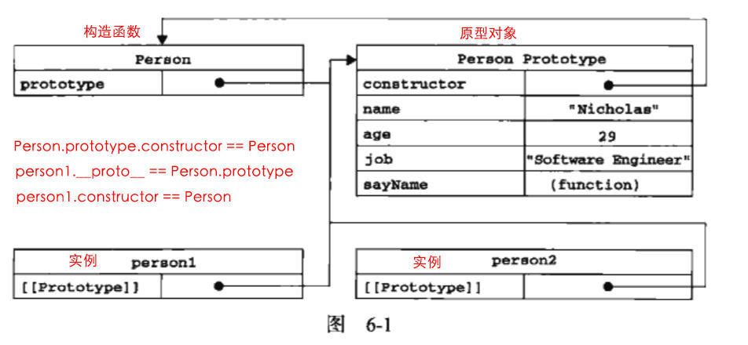

一. 普通对象与函数对象
JavaScript 中，万物皆对象！但对象也是有区别的。分为普通对象和函数对象，Object 、Function 是 JS 自带的函数对象。下面举例说明：
var o1 = {};
var o2 =new Object();
var o3 = new f1();
function f1(){};
var f2 = function(){};
var f3 = new Function('str','console.log(str)');
console.log(typeof Object); //function
console.log(typeof Function); //function
console.log(typeof f1); //function
console.log(typeof f2); //function
console.log(typeof f3); //function
console.log(typeof o1); //object
console.log(typeof o2); //object
console.log(typeof o3); //object
在上面的例子中 o1 o2 o3 为普通对象，f1 f2 f3 为函数对象。怎么区分，其实很简单，凡是通过 new Function() 创建的对象都是函数对象，其他的都是普通对象。f1,f2,归根结底都是通过 new Function()的方式进行创建的。Function Object 也都是通过 New Function()创建的。
一定要分清楚普通对象和函数对象，下面我们会常常用到它。
二. 构造函数
我们先复习一下构造函数的知识：
function Person(name, age, job) {
this.name = name;
this.age = age;
this.job = job;
this.sayName = function() {
alert(this.name)
}
}
var person1 = new Person('Zaxlct', 28, 'Software Engineer');
var person2 = new Person('Mick', 23, 'Doctor');
上面的例子中 person1 和 person2 都是 Person 的实例。这两个实例都有一个 constructor （构造函数）属性，该属性（是一个指针）指向 Person。 即：
console.log(person1.constructor == Person); //true
console.log(person2.constructor == Person); //true
我们要记住两个概念（构造函数，实例）：
person1 和 person2 都是 构造函数 Person 的实例
一个公式：
实例的构造函数属性（constructor）指向构造函数。
三. 原型对象
在 JavaScript 中，每当定义一个对象（函数也是对象）时候，对象中都会包含一些预定义的属性。其中每个函数对象都有一个prototype 属性，这个属性指向函数的原型对象。（先用不管什么是 __proto__ 第二节的课程会详细的剖析）
function Person() {}
Person.prototype.name = 'Zaxlct';
Person.prototype.age = 28;
Person.protetype.job = 'Software Engineer';
Person.prototype.sayName = function() {
alert(this.name);
}
var person1 = new Person();
person1.sayName(); // 'Zaxlct'
var person2 = new Person();
person2.sayName(); // 'Zaxlct'
console.log(person1.sayname == person2.sayname); //true
我们得到了本文第一个「定律」：
每个对象都有 __proto__ 属性，但只有函数对象才有 prototype 属性
那什么是原型对象呢？
我们把上面的例子改一改你就会明白了：
Person.prototype = {
name: 'Zaxlct',
age: 28,
job: 'Software Engineer',
sayName: function() {
alert(this.name);
}
}
原型对象，顾名思义，它就是一个普通对象（废话 = =!）。从现在开始你要牢牢记住原型对象就是 Person.prototype ，如果你还是害怕它，那就把它想想成一个字母 A： var A = Person.prototype
在上面我们给 A 添加了 四个属性：name、age、job、sayName。其实它还有一个默认的属性：constructor
在默认情况下，所有的原型对象都会自动获得一个 constructor（构造函数）属性，这个属性（是一个指针）指向 prototype 属性所在的函数（Person）
上面这句话有点拗口，我们「翻译」一下：A 有一个默认的 constructor 属性，这个属性是一个指针，指向 Person。即：
Person.prototype.constructor == Person
在上面第二小节《构造函数》里，我们知道实例的构造函数属性（constructor）指向构造函数 ：person1.constructor == Person
这两个「公式」好像有点联系：
person1.constructor == Person
Person.prototype.constructor == Person
person1 为什么有 constructor 属性？那是因为 person1 是 Person 的实例。
那 Person.prototype 为什么有 constructor 属性？？同理， Person.prototype （你把它想象成 A） 也是Person 的实例。
也就是在 Person 创建的时候，创建了一个它的实例对象并赋值给它的 prototype，基本过程如下：
var A = new Person();
Person.prototype = A;
结论：原型对象（Person.prototype）是 构造函数（Person）的一个实例。
原型对象其实就是普通对象（但 Function.prototype 除外，它是函数对象，但它很特殊，他没有prototype属性（前面说道函数对象都有prototype属性））。看下面的例子：
function Person(){};
console.log(Person.prototype) //Person{}
console.log(typeof Person.prototype) //Object
console.log(typeof Function.prototype) // Function，这个特殊
console.log(typeof Object.prototype) // Object
console.log(typeof Function.prototype.prototype) //undefined，它很特殊，没有prototype属性
Function.prototype 为什么是函数对象呢？
var A = new Function ();
Function.prototype = A;
上文提到凡是通过 new Function( ) 产生的对象都是函数对象。因为 A 是函数对象，所以Function.prototype 是函数对象。
那原型对象是用来做什么的呢？主要作用是用于继承。举个例子：
var Person = function(name){
this.name = name; // tip: 当函数执行时这个 this 指的是谁？
};
Person.prototype.getName = function(){
return this.name; // tip: 当函数执行时这个 this 指的是谁？
}
var person1 = new person('Mick');
person1.getName(); //Mick
从这个例子可以看出，通过给 Person.prototype 设置了一个函数对象的属性，那有 Person 的实例（person1）出来的普通对象就继承了这个属性。具体是怎么实现的继承，就要讲到下面的原型链了。
小问题，上面两个 this 都指向谁？
var person1 = new person('Mick');
person1.name = 'Mick'; // 此时 person1 已经有 name 这个属性了
person1.getName(); //Mick
故两次 this 在函数执行时都指向 person1。
四. __proto__
JS 在创建对象（不论是普通对象还是函数对象）的时候，都有一个叫做__proto__ 的内置属性，用于指向创建它的构造函数的原型对象。
对象 person1 有一个 __proto__属性，创建它的构造函数是 Person，构造函数的原型对象是 Person.prototype ，所以：
person1.__proto__ == Person.prototype //指向构建它的构造函数的原型对象
请看下图：

Person.prototype.constructor == Person;
person1.__proto__ == Person.prototype;
person1.constructor == Person;
不过，要明确的真正重要的一点就是，这个连接存在于实例（person1）与构造函数（Person）的原型对象（Person.prototype）之间，而不是存在于实例（person1）与构造函数（Person）之间。
注意：因为绝大部分浏览器都支持__proto__属性，所以它才被加入了 ES6 里（ES5 部分浏览器也支持，但还不是标准）。
五. 构造器
熟悉 Javascript 的童鞋都知道，我们可以这样创建一个对象：
var obj = {}
它等同于下面这样：
var obj = new Object()
obj 是构造函数（Object）的一个实例。所以：
obj.constructor === Object
obj.__proto__ === Object.prototype
新对象 obj 是使用 new 操作符后跟一个构造函数来创建的。构造函数（Object）本身就是一个函数（就是上面说的函数对象），它和上面的构造函数 Person 差不多。只不过该函数是出于创建新对象的目的而定义的。所以不要被 Object 吓倒。
同理，可以创建对象的构造器不仅仅有 Object，也可以是 Array，Date，Function等。
所以我们也可以构造函数来创建 Array、 Date、Function
var b = new Array();
b.constructor === Array;
b.__proto__ === Array.prototype;
var c = new Date();
c.constructor === Date;
c.__proto__ === Date.prototype;
var d = new Function();
d.constructor === Function;
d.__proto__ === Function.prototype;
这些构造器都是函数对象：
六. 原型链
小测试来检验一下你理解的怎么样：
person1.__proto__ 是什么？Person.__proto__ 是什么？Person.prototype.__proto__ 是什么？Object.__proto__ 是什么？Object.prototype.__proto__ 是什么？
答案：
第一题：
因为 person1.__proto__ === person1 的构造函数.prototype
因为 person1的构造函数 === Person
所以 person1.__proto__ === Person.prototype //构造函数的原型
第二题：
因为 Person.__proto__ === Person的构造函数.prototype
因为 Person的构造函数 === Function
所以 Person.__proto__ === Function.prototype
第三题：
Person.prototype 是一个普通对象，我们无需关注它有哪些属性，只要记住它是一个普通对象。
因为一个普通对象的构造函数 === Object
所以 Person.prototype.__proto__ === Object.prototype
第四题，参照第二题，因为 Person 和 Object 一样都是构造函数
第五题：
Object.prototype 对象也有proto属性，但它比较特殊，为 null 。因为 null 处于原型链的顶端，这个只能记住。
Object.prototype.__proto__ === null
七. 函数对象 （复习一下前面的知识点）
所有函数对象的__proto__都指向Function.prototype，它是一个空函数（Empty function）
Number.__proto__ === Function.prototype // true
Number.constructor == Function //true
Boolean.__proto__ === Function.prototype // true
Boolean.constructor == Function //true
String.__proto__ === Function.prototype // true
String.constructor == Function //true
// 所有的构造器都来自于Function.prototype，甚至包括根构造器Object及Function自身
Object.__proto__ === Function.prototype // true
Object.constructor == Function // true
// 所有的构造器都来自于Function.prototype，甚至包括根构造器Object及Function自身
Function.__proto__ === Function.prototype // true
Function.constructor == Function //true
Array.__proto__ === Function.prototype // true
Array.constructor == Function //true
RegExp.__proto__ === Function.prototype // true
RegExp.constructor == Function //true
Error.__proto__ === Function.prototype // true
Error.constructor == Function //true
Date.__proto__ === Function.prototype // true
Date.constructor == Function //true
JavaScript中有内置(build-in)构造器/对象共计12个（ES5中新加了JSON），这里列举了可访问的8个构造器。剩下如Global不能直接访问，Arguments仅在函数调用时由JS引擎创建，Math，JSON是以对象形式存在的，无需new。它们的proto是Object.prototype。如下
Math.__proto__ === Object.prototype // true
Math.construrctor == Object // true
JSON.__proto__ === Object.prototype // true
JSON.construrctor == Object //true
上面说的函数对象当然包括自定义的。如下
// 函数声明
function Person() {}
// 函数表达式
var Perosn = function() {}
console.log(Person.__proto__ === Function.prototype) // true
console.log(Man.__proto__ === Function.prototype) // true
这说明什么呢？
所有的构造器都来自于 Function.prototype，甚至包括根构造器Object及Function自身。所有构造器都继承了·Function.prototype·的属性及方法。如length、call、apply、bind
Function.prototype也是唯一一个typeof XXX.prototype为 function的prototype。其它的构造器的prototype都是一个对象（原因第三节里已经解释过了）。如下（又复习了一遍）：
console.log(typeof Function.prototype) // function
console.log(typeof Object.prototype) // object
console.log(typeof Number.prototype) // object
console.log(typeof Boolean.prototype) // object
console.log(typeof String.prototype) // object
console.log(typeof Array.prototype) // object
console.log(typeof RegExp.prototype) // object
console.log(typeof Error.prototype) // object
console.log(typeof Date.prototype) // object
console.log(typeof Object.prototype) // object
噢，上面还提到它是一个空的函数，console.log(Function.prototype) 下看看
知道了所有构造器（含内置及自定义）的__proto__都是Function.prototype，那Function.prototype的__proto__是谁呢？
相信都听说过JavaScript中函数也是一等公民，那从哪能体现呢？如下
console.log(Function.prototype.__proto__ === Object.prototype) // true
这说明所有的构造器也都是一个普通 JS 对象，可以给构造器添加/删除属性等。同时它也继承了Object.prototype上的所有方法：toString、valueOf、hasOwnProperty等。（你也应该明白第一句话，第二句话我们下一节继续说，不用挖坑了，还是刚才那个坑；））
最后Object.prototype的proto是谁？
Object.prototype.__proto__ === null // true
已经到顶了，为null。
八. Prototype
在 ECMAScript 核心所定义的全部属性中，最耐人寻味的就要数 prototype 属性了。对于 ECMAScript 中的引用类型而言，prototype 是保存着它们所有实例方法的真正所在。换句话所说，诸如 toString()和 valuseOf() 等方法实际上都保存在 prototype 名下，只不过是通过各自对象的实例访问罢了。
——《JavaScript 高级程序设计》第三版 P116
我们知道 JS 内置了一些方法供我们使用，比如：
对象可以用 constructor/toString()/valueOf() 等方法;
数组可以用 map()/filter()/reducer() 等方法；
数字可用用 parseInt()/parseFloat()等方法；
当我们创建一个函数时：
var Person = new Object()
Person 是 Object 的实例，所以 Person 继承了Object 的原型对象Object.prototype上所有的方法：
Object 的每个实例都具有以上的属性和方法。
所以我可以用 Person.constructor 也可以用 Person.hasOwnProperty。
当我们创建一个数组时：
var num = new Array()
num 是 Array 的实例，所以 num 继承了Array 的原型对象Array.prototype上所有的方法：
我们可以用一个 ES5 提供的新方法：Object.getOwnPropertyNames，获取所有（包括不可枚举的属性）的属性名不包括 prototy 中的属性，返回一个数组：
var arrayAllKeys = Array.prototype; // [] 空数组
// 只得到 arrayAllKeys 这个对象里所有的属性名(不会去找 arrayAllKeys.prototype 中的属性)
console.log(Object.getOwnPropertyNames(arrayAllKeys));
/* 输出：
["length", "constructor", "toString", "toLocaleString", "join", "pop", "push",
"concat", "reverse", "shift", "unshift", "slice", "splice", "sort", "filter", "forEach",
"some", "every", "map", "indexOf", "lastIndexOf", "reduce", "reduceRight",
"entries", "keys", "copyWithin", "find", "findIndex", "fill"]
*/
这样你就明白了随便声明一个数组，它为啥能用那么多方法了。
细心的你肯定发现了Object.getOwnPropertyNames(arrayAllKeys) 输出的数组里并没有 constructor/hasOwnPrototype等对象的方法（你肯定没发现）。
但是随便定义的数组也能用这些方法：
var num = [1];
console.log(num.hasOwnPrototype()) // false (输出布尔值而不是报错)
因为Array.prototype 虽然没这些方法，但是它有原型对象（__proto__）：
// 上面我们说了 Object.prototype 就是一个普通对象。
Array.prototype.__proto__ == Object.prototype
所以 Array.prototype 继承了对象的所有方法，当你用num.hasOwnPrototype()时，JS 会先查一下它的构造函数 （Array） 的原型对象 Array.prototype 有没有有hasOwnPrototype()方法，没查到的话继续查一下 Array.prototype 的原型对象 Array.prototype.__proto__有没有这个方法。
当我们创建一个函数时：
var f = new Function("x","return x*x;");
//当然你也可以这么创建 f = function(x){ return x*x }
console.log(f.arguments) // arguments 方法从哪里来的？
console.log(f.call(window)) // call 方法从哪里来的？
console.log(Function.prototype) // function() {} （一个空的函数）
console.log(Object.getOwnPropertyNames(Function.prototype));
/* 输出
["length", "name", "arguments", "caller", "constructor", "bind", "toString", "call", "apply"]
*/
我们再复习第八小节这句话：
所有函数对象proto都指向 Function.prototype，它是一个空函数（Empty function）
嗯，我们验证了它就是空函数。不过不要忽略前半句。我们枚举出了它的所有的方法，所以所有的函数对象都能用，比如:
如果你还没搞懂啥是函数对象？
建议你可以再复习下为什么：
Function.prototype 是唯一一个typeof XXX.prototype为 “function”的prototype
我猜你肯定忘了。
九. 复习一下
第八小节我们总结了：
所有函数对象的 __proto__ 都指向 Function.prototype，它是一个空函数（Empty function）
但是你可别忘了在第三小节我们总结的：
所有对象的 __proto__ 都指向其构造器的 prototype
我们下面再复习下这句话。
先看看 JS 内置构造器：
var obj = {name: 'jack'}
var arr = [1,2,3]
var reg = /hello/gvar date = new Datevar err = new Error('exception')
console.log(obj.__proto__ === Object.prototype) // true
console.log(arr.__proto__ === Array.prototype) // true
console.log(reg.__proto__ === RegExp.prototype) // true
console.log(date.__proto__ === Date.prototype) // true
console.log(err.__proto__ === Error.prototype) // true
再看看自定义的构造器，这里定义了一个 Person：
function Person(name) {
this.name = name;
}
var p = new Person('jack')
console.log(p.__proto__ === Person.prototype) // true
p 是 Person 的实例对象，p 的内部原型总是指向其构造器 Person 的原型对象 prototype。
每个对象都有一个 constructor 属性，可以获取它的构造器，因此以下打印结果也是恒等的：
function Person(name) {
this.name = name
}
var p = new Person('jack')
console.log(p.__proto__ === p.constructor.prototype) // true
上面的Person没有给其原型添加属性或方法，这里给其原型添加一个getName方法：
function Person(name) {
this.name = name
}
// 修改原型
Person.prototype.getName = function() {}
var p = new Person('jack')
console.log(p.__proto__ === Person.prototype) // true
console.log(p.__proto__ === p.constructor.prototype) // true
可以看到p.__proto__与Person.prototype，p.constructor.prototype都是恒等的，即都指向同一个对象。
如果换一种方式设置原型，结果就有些不同了：
function Person(name) {
this.name = name
}
// 重写原型
Person.prototype = {
getName: function() {}
}
var p = new Person('jack')
console.log(p.__proto__ === Person.prototype) // true
console.log(p.__proto__ === p.constructor.prototype) // false
这里直接重写了 Person.prototype（注意：上一个示例是修改原型）。输出结果可以看出p.__proto__仍然指向的是Person.prototype，而不是p.constructor.prototype。
这也很好理解，给Person.prototype赋值的是一个对象直接量{getName: function(){}}，使用对象直接量方式定义的对象其构造器（constructor）指向的是根构造器Object，Object.prototype是一个空对象{}，{}自然与{getName: function(){}}不等。如下：
var p = {}
console.log(Object.prototype) // 为一个空的对象{}
console.log(p.constructor === Object) // 对象直接量方式定义的对象其constructor为Object
console.log(p.constructor.prototype === Object.prototype) // 为true
十. 原型链（再复习一下：）
function Person(){}
var person1 = new Person();
console.log(person1.__proto__ === Person.prototype); // true
console.log(Person.prototype.__proto__ === Object.prototype) //true
console.log(Object.prototype.__proto__) //null
Person.__proto__ == Function.prototype; //true
console.log(Function.prototype)// function(){} (空函数)
var num = new Array()
console.log(num.__proto__ == Array.prototype) // true
console.log( Array.prototype.__proto__ == Object.prototype) // true
console.log(Array.prototype) // [] (空数组)
console.log(Object.prototype.__proto__) //null
console.log(Array.__proto__ == Function.prototype)// true
疑点解惑：
Object.__proto__ === Function.prototype // true
Object 是函数对象，是通过new Function()创建的，所以Object.__proto__指向Function.prototype。（参照第八小节：「所有函数对象的__proto__都指向Function.prototype」）
Function.__proto__ === Function.prototype // true
Function 也是对象函数，也是通过new Function()创建，所以Function.__proto__指向Function.prototype。
自己是由自己创建的，好像不符合逻辑，但仔细想想，现实世界也有些类似，你是怎么来的，你妈生的，你妈怎么来的，你姥姥生的，……类人猿进化来的，那类人猿从哪来，一直追溯下去……，就是无，（NULL生万物）
正如《道德经》里所说“无，名天地之始”。
Function.prototype.__proto__ === Object.prototype //true
其实这一点我也有点困惑，不过也可以试着解释一下。
Function.prototype是个函数对象，理论上他的__proto__应该指向 Function.prototype，就是他自己，自己指向自己，没有意义。
JS一直强调万物皆对象，函数对象也是对象，给他认个祖宗，指向Object.prototype。Object.prototype.__proto__ === null，保证原型链能够正常结束。
十一 总结
- 原型和原型链是JS实现继承的一种模型。
- 原型链的形成是真正是靠
__proto__ 而非prototype
要深入理解这句话，我们再举个例子，看看前面你真的理解了吗？
var animal = function(){};
var dog = function(){};
animal.price = 2000;
dog.prototype = animal;
var tidy = new dog();
console.log(dog.price) //undefined
console.log(tidy.price) // 2000
这里解释一下：
var dog = function(){};
dog.prototype.price = 2000;
var tidy = new dog();
console.log(tidy.price); // 2000
console.log(dog.price); //undefined
var dog = function(){};
var tidy = new dog();
tidy.price = 2000;
console.log(dog.price); //undefined
实例（tidy）和 原型对象（dog.prototype）存在一个连接。不过，要明确的真正重要的一点就是，这个连接存在于实例（tidy）与构造函数的原型对象（dog.prototype）之间，而不是存在于实例（tidy）与构造函数（dog）之间。
总结：普通对象的__proto__指向这个对象（this）的构造函数的prototype；函数对象的__proto__全部都是指向Function的prototype。
无论是Function的prototype.__proto__还是构造函数的prototype.__proto__ 都指向object.prototype，然后最终object.prototype.__proto__指向null。
也可以理解为：功能上讲prototype是给别人用的东西，而且给别人的东西自己不能用，__proto__是借用别人的东西（继承）。
对于所有的对象，都有__proto__属性，这个属性对应该对象的原型。
对于函数对象，除了__proto__属性之外，还有prototype属性，当一个函数被用作构造函数来创建实例时，该函数的prototype属性值将被作为原型赋值给所有对象实例（也就是设置实例的__proto__属性，所以才会说每 个对象的__proto__属性指向该对象构造函数的prototype）
所有的原型对象都有constructor属性，该属性对应创建所有指向该原型的实例的构造函数。
函数对象和原型对象通过prototype和constructor属性进行相互关联。
原型链：因为每个对象和原型都有原型，对象的原型指向原型对象，而父的原型又指向父的父，这种原型层层连接起来的就构成了原型链。（终点是object.prototype，即原型链顶部）